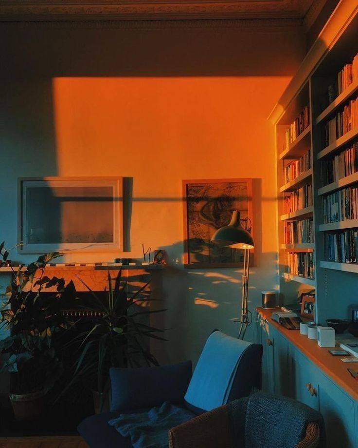
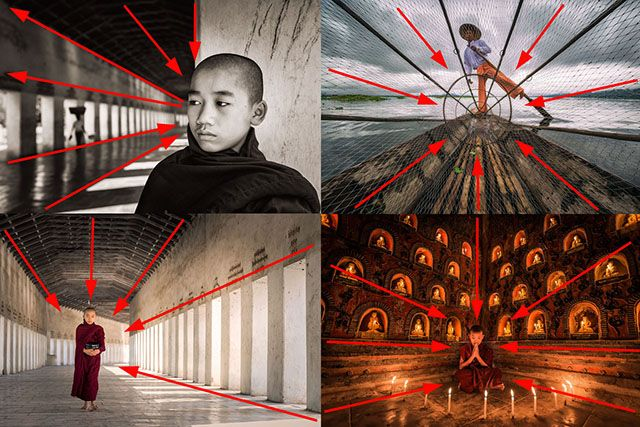
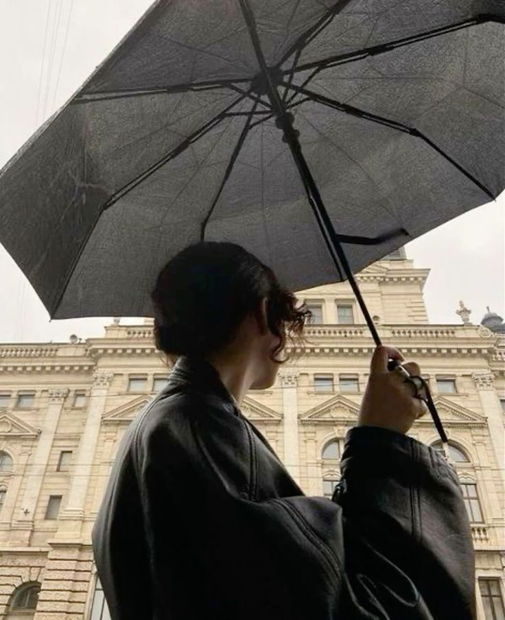

Dicas para Fotografia de Paisagens
1. Aproveite a luz natural: A melhor luz para fotografar paisagens é durante o amanhecer ou o entardecer.
2. Use a regra dos terços: Posicione os elementos importantes da sua composição nas interseções das linhas de terços.
3. Experimente diferentes ângulos: Não tenha medo de explorar perspectivas inusitadas para capturar a beleza do cenário.
Equipamento Recomendado
Para capturar paisagens incríveis, você não precisa de um equipamento caro. Uma boa câmera DSLR ou até mesmo um smartphone de qualidade podem fazer a diferença.
- Câmera DSLR ou mirrorless
- Tripé
- Lentes de grande angular
Inspiração
Confira alguns fotógrafos de paisagens renomados e suas obras para se inspirar:
- Ansel Adams
- Galen Rowell
- Marc Adamus